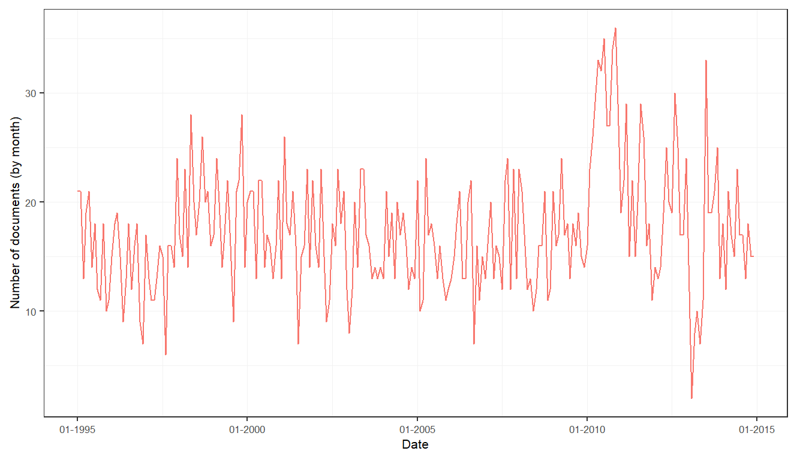
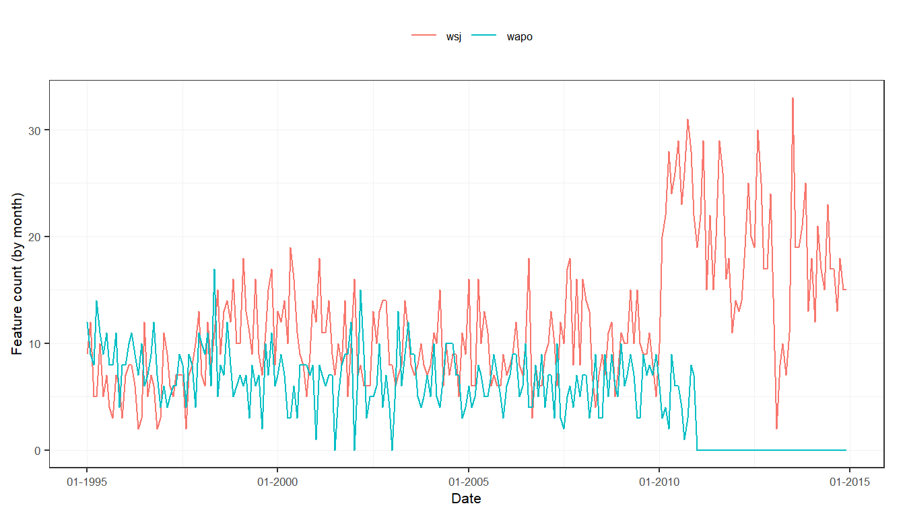
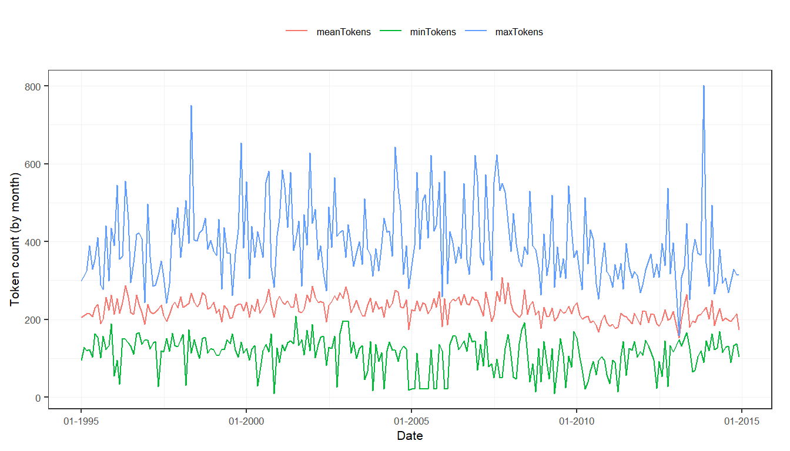

This tutorial provides insights in how to create, enrich, transform, and analyze a sento_corpus object. A sento_corpus object is special because it always has a date column, and numeric metadata features.
Preparation
library("sentometrics") library("quanteda") data("usnews") data("list_lexicons") data("list_valence_shifters")
The corpus_summarize() function allows quickly investigating how your corpus looks like in terms of number of documents, number of tokens, and its metadata features. It can be done at a daily, weekly, monthly, or yearly frequency, and for all the corpus features or only a selection of them.
corpus <- sento_corpus(usnews) summ <- corpus_summarize(corpus, by = "month", features = c("wsj", "wapo")) stats <- summ[["stats"]] plots <- summ[["plots"]]
The summary consists of a statistics component…
stats## date documents totalTokens meanTokens minTokens maxTokens wsj wapo
## 1: 1995-01-01 21 4322 205.8095 96 299 9 12
## 2: 1995-02-01 21 4425 210.7143 128 313 12 9
## 3: 1995-03-01 13 2793 214.8462 119 325 5 8
## 4: 1995-04-01 19 4086 215.0526 123 389 5 14
## 5: 1995-05-01 21 4349 207.0952 103 330 10 11
## ---
## 235: 2014-08-01 17 3369 198.1765 131 269 17 0
## 236: 2014-09-01 13 2528 194.4615 90 297 13 0
## 237: 2014-10-01 18 3665 203.6111 133 329 18 0
## 238: 2014-11-01 15 3222 214.8000 138 314 15 0
## 239: 2014-12-01 15 2581 172.0667 103 315 15 0… and a component with pregenerated graphs of the statistics.
plots$doc_plot # monthly evolution of the number of documents

plots$feature_plot # monthly evolution of the presence of the two journal features

plots$token_plot # monthly evolution of the token statistics

quanteda corpus functions on a sento_corpus objectIt is also possible to apply the many corpus manipulation functions of the quanteda package on a sento_corpus object. In fact, the sento_corpus object is built on quanteda’s corpus object.
corpus <- sento_corpus(usnews) res <- corpus_reshape(corpus, to = "sentences") sam <- corpus_sample(corpus, 100) seg <- corpus_segment(corpus, pattern = "stock", use_docvars = TRUE) sub <- corpus_subset(corpus, wsj == 1) tri <- corpus_trim(corpus, "documents", min_ntoken = 300) trs <- corpus_trim(corpus, "sentences", min_ntoken = 40)
sento_corpus object with featuresUsing the add_features() function, additional features can be added to your corpus, or generated through keywords or regex pattern matching.
corpus <- sento_corpus(usnews[, 1:3]) kw <- list( E = c("economy", "economic"), P = c("polic.|Polic.|politi.|Politi."), # a regex pattern U = c("uncertainty", "uncertain") ) corpus <- add_features(corpus, keywords = kw, do.binary = TRUE, do.regex = c(FALSE, TRUE, FALSE)) docvars(corpus, "dummyFeature") <- NULL head(docvars(corpus), 20)
## date E P U
## 1 1995-01-02 0 0 0
## 2 1995-01-05 0 0 0
## 3 1995-01-05 1 0 0
## 4 1995-01-08 0 0 0
## 5 1995-01-09 0 0 0
## 6 1995-01-09 0 0 0
## 7 1995-01-10 0 0 0
## 8 1995-01-10 0 1 0
## 9 1995-01-11 1 0 0
## 10 1995-01-16 1 0 0
## 11 1995-01-18 1 0 0
## 12 1995-01-19 0 0 0
## 13 1995-01-19 0 1 0
## 14 1995-01-19 1 1 0
## 15 1995-01-20 0 1 0
## 16 1995-01-20 0 0 0
## 17 1995-01-20 0 1 0
## 18 1995-01-25 0 1 1
## 19 1995-01-26 1 1 0
## 20 1995-01-26 1 0 0